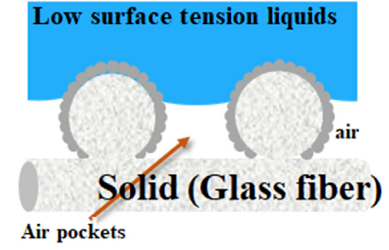

Synthesis of Omniphobic Membrane
How is the membrane made?
Overview of synthesis of omniphobic membrane
Prepration of Glass Fiber (GF) Membrane
Chemicals: Stage 1 (Oxidation)
- KMnO4
- Methylpropan-2-ol
Chemicals: Stage 2 (Grafting of ZnO Nanoparticles)
- Zinc Nitrate
- Triethanolamine
- Ammonium Hydroxide
Details
A piece of GF membrane was hydrothermally oxidized by immersing it in a 12.7 mM aqueous KMnO4 solution in a glass container (100 mL of DI water) containing 250 μL of methylpropan-2-ol at 84°C for 40 min. Then, the KMnO4-treated membrane was taken out and washed with a large amount of DI water at room temperature. In the next step, the KMnO4-treated membrane was placed in the chemical reaction bath for 40 min at 96°C to coat the membrane with ZnO NPs. The bath solution consisted of 50 mM zinc nitrate in an aqueous solution (87.5mL of DI water) containing 10mL of triethanolamine and 2.5mL of ammonium hydroxide. After deposition, the membrane was rinsed with DI water to remove any unattached ZnO NPs and dried in an oven at 90°C overnight.
Flourination of Treated GF Membrane
Chemicals
- 1H,1H,2H,2H-perfluorodecyltriethoxysilane (FAS17)
- Polyvinylidene fluoride-co-hexafluoropropylene (PVDF-HFP) polymer
Details
To prepare the PVDF-HFP/FAS17 solution, 1.0 g of PVDF-HFP pellets was dissolved in 50 mL of DMF through 2 h of magnetic stirring. FAS17 (0.5 mL) was then added into the solution of PVDF-HFP in Dimethylformamide (DMF), and stirring was continued for another half an hour. After that, the GF membrane that has been modified with FAS17 was dipped into the PVDF-HFP/FAS17 solution in DMF for 1 min to coat the membrane surface with the PVDF-HFP polymer, after which the membrane was dried at 130°C for 1 h. The polymer coating was important for immobilizing the ZnO NPs on the fibers. The resultant membrane is the omniphobic membrane.

The resultant membrane was able to repel common organic molecules and water. It can be seen by the reported high contact angle values at a minimum of 106° by A. Huang et al. (2018), indicating that the OMNI membrane was not only hydrophobic but also oleophobic. The ZnO NPs deposited on membrane created a multilevel re-entrant structure that could provide air pockets for suspending low surface tension liquids on the solid-liquid-air interface. These pockets greatly reduced the real solid/liquid contact area and improved the liquid repellency by forming a layer of air.
